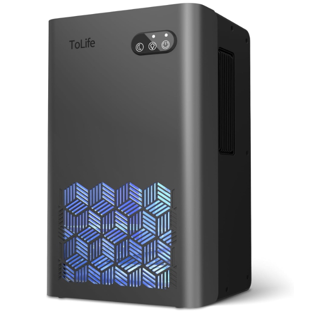

ToLife 1000 Sq Ft 95 oz Dehumidifier Product Review
A fast-rising compact dehumidifier makes a convincing case for bedrooms and bathrooms—but the “1,000 sq ft” label needs context before you put it in a damp basement.
CONFIDENCE
QuietTrends may earn a commission when you purchase through links on this site. This helps support our research at no additional cost to you.

Executive Summary
Buy the ToLife 95 oz dehumidifier if you want a compact, quiet unit for a bedroom, bathroom, closet, RV, or other small-to-moderate space where the problem is everyday muggy air rather than serious water intrusion. Skip it if you need rapid basement drying, a built-in humidistat you can trust for whole-room control, continuous drainage, or compressor-class moisture removal.
The attractive part is the price and quiet operation. The important part is understanding what thermoelectric dehumidification can realistically do.
ToLife markets this model for spaces up to 1,000 square feet, with a 95-ounce tank, powerful and sleep modes, automatic tank-full shutoff, and seven-color ambient lighting. Third-party market tracking shows something more meaningful than the coverage claim: the exact grey configuration has recently been selling at an estimated 10,000 units per month, with month-over-month sales growth around 42.9%. That is real buyer interest. It is not proof that the machine can replace a full-size compressor dehumidifier.
Recommended For / Best For
The best buyer wants less clammy air in a lived-in room without bringing home a large, noisy appliance.
- Bedrooms where low nighttime noise matters.
- Bathrooms with lingering moisture after showers.
- Closets, offices, RVs, and smaller finished spaces.
- Buyers who value a large removable tank more than app control.
Skip If
- You are trying to dry a wet or musty basement quickly.
- You need continuous hose drainage or a true compressor system.
- You expect “1,000 sq ft” to mean equal performance anywhere within a 1,000-square-foot room.
- You need precise set-and-hold humidity control rather than simple operating modes.
Price Reality Check
The grey ToLife 95 oz model has recently tracked around $59.96. That places it in affordable compact-appliance territory: expensive enough that it should produce visible water collection, but far below the price of serious compressor dehumidifiers designed for large basements.
At roughly $60, it needs to make one problem noticeably better: a muggy bedroom, damp bathroom, closet, office, or RV.
The value case weakens if you are buying it because the “1,000 sq ft” number sounds equivalent to a full-size dehumidifier rating. Thermoelectric units trade extraction speed for smaller size, lower noise, and simpler operation. If the space is persistently wet, compare upward rather than buying two small units.
Product Deep Dive
95 oz Tank + Thermoelectric Moisture Removal
Manufacturer and listing data describe a 95-ounce tank and semiconductor-condensation system. The large tank is useful because it reduces how often you have to empty a compact machine, but tank size is not the same thing as daily extraction capacity.
Buyer translation: this is better thought of as a quiet moisture-maintenance appliance than a basement rescue machine.
- The tank is generous for the product’s compact footprint.
- Thermoelectric operation avoids the on-off compressor sound common in larger units.
- Performance will vary with temperature and relative humidity; warm, humid rooms give the unit more moisture to collect.
Buyer takeaway: judge success by the humidity problem you need to solve, not by the largest room-size number on the listing.
Powerful Mode vs. Sleep Mode
ToLife offers two operating modes. The faster setting prioritizes moisture collection; sleep mode reduces fan speed and is marketed below 30 dB. Multiple third-party roundups repeat the quiet-sleep positioning, while the exact acoustic result will still depend on room placement and distance from the bed.
- Use the stronger mode after a shower or during the dampest part of the day.
- Sleep mode is the more compelling reason to choose this over a compressor unit for a bedroom.
- The seven-color light can add ambiance, but it should be treated as a convenience feature, not a performance feature.
Buyer takeaway: quiet operation is the product’s clearest lifestyle advantage.
Real-World Ownership Check
This is a simple appliance, which is part of its appeal. The ownership questions are less about setup and more about expectations, tank care, and whether the room is too demanding for thermoelectric technology.
- Setup: place it on a stable surface with breathing room around the air intake and exhaust; give it time to acclimate after shipping before judging collection.
- Maintenance: empty and rinse the tank regularly, keep air passages clean, and watch for mineral or biofilm buildup if collected water sits for long periods.
- Fit: the compact body makes sense on a dresser, shelf, bathroom counter area, or floor location where a full-size unit would feel intrusive.
- Deal breaker: if you need pints-per-day extraction, a drain hose, or rapid recovery after water intrusion, move to a compressor dehumidifier.
What I Would Compare Next
Three comparisons matter more than color or ambient lighting:
- BEDRED 95 oz compact dehumidifier: a direct small-unit rival with strong Amazon sales; compare price, owner complaints, and tank design.
- TABYIK 35 oz dehumidifier: smaller tank and lower price, useful if your actual space is a bathroom, closet, or RV rather than a large room.
- AEOCKY compressor dehumidifier: the comparison to make if the real problem is a basement or consistently high humidity, not bedroom comfort.
For buyers whose moisture problem is tied to summer heat, QuietTrends has also reviewed premium portable-air-conditioning options; cooling and dehumidification overlap, but they solve different primary problems.
VIEW LATEST DEALS →Buyer Signal Analysis
The ToLife deserves a closer look because its buyer signal is unusually clear: strong unit velocity, accelerating sales, a low price, and thousands of ratings sit alongside surprisingly thin mainstream review coverage. Search results are populated mostly by marketplace pages, comparison roundups, and small niche review sites rather than a wall of established review publishers.
That creates exactly the kind of purchase where a buyer can confuse popularity with capability. The product appears popular because it is affordable, quiet, visually friendly, and easy to understand. The remaining question is whether the buyer’s humidity problem is modest enough for this technology.
Assimilated Signal Sources
- Manufacturer/listing: supports the 95 oz tank, two modes, automatic shutoff, compact dimensions, ambient light, and up-to-1,000-sq-ft positioning.
- Market tracking: places the exact grey ASIN among leading Amazon dehumidifier listings, around 10,000 estimated monthly units and roughly 42.9% month-over-month growth in the latest tracked period.
- Professional reviews: mainstream coverage of this exact model remains limited; most current coverage comes from smaller category roundups.
- Amazon owners: the listing has accumulated thousands of ratings, enough to make recurring noise, collection, tank, and durability themes worth checking immediately before purchase.
- Search chatter: the key confusion is whether a quiet thermoelectric unit can do the job of a compressor dehumidifier simply because both advertise large room sizes.
Unanswered Buyer Questions
- How much water will the ToLife 95 oz dehumidifier actually collect in my bedroom or bathroom in 24 hours?
- Is the ToLife 1,000 sq ft dehumidifier effective enough for a basement, or should I buy a compressor model?
- How does the ToLife 95 oz compare with BEDRED, TABYIK, and NineSky compact dehumidifiers?
- Does sleep mode stay quiet after months of fan use?
- Will the tank-full shutoff remain reliable with repeated daily use?
QuietTrends read: the sales acceleration is real enough to pay attention to, but the safest interpretation is narrow: this looks like a compelling quiet-room dehumidifier, not evidence that inexpensive thermoelectric hardware has suddenly replaced full-size compressor machines.
COMPARE FIRST
ToLife 1000 Sq Ft 95 oz Dehumidifier
The ToLife earns its place on the shortlist for bedrooms, bathrooms, closets, offices, and RVs because it combines quiet operation, a large tank, low purchase price, and unusually strong current demand.
Final Buyer Guidance: Buy it when your priority is quiet, compact humidity maintenance. Compare against a compressor dehumidifier before buying if the room is genuinely wet, large, below-grade, or needs fast measurable moisture removal.
CHECK CURRENT PRICE ON AMAZON →